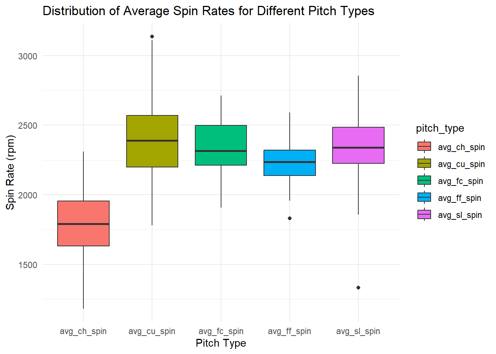

Warning: package 'tidyr' was built under R version 4.3.3
Warning: package 'readr' was built under R version 4.3.3
Warning: package 'lubridate' was built under R version 4.3.3
── Attaching core tidyverse packages ──────────────────────── tidyverse 2.0.0 ──
✔ forcats 1.0.0 ✔ readr 2.1.5
✔ lubridate 1.9.3 ✔ tibble 3.2.1
✔ purrr 1.0.2 ✔ tidyr 1.3.1
── Conflicts ────────────────────────────────────────── tidyverse_conflicts() ──
✖ dplyr::filter() masks stats::filter()
✖ dplyr::lag() masks stats::lag()
ℹ Use the conflicted package (<http://conflicted.r-lib.org/>) to force all conflicts to become errors
# Calculate average speeds and spin rates for each pitch typeaverage_data <- merged_data %>%mutate(avg_ff_speed =rowMeans(select(., FF_release_speed, SI_release_speed), na.rm =TRUE),avg_ff_spin =rowMeans(select(., FF_release_spin_rate, SI_release_spin_rate), na.rm =TRUE),avg_ch_speed = CH_release_speed,avg_ch_spin = CH_release_spin_rate,avg_cu_speed = CU_release_speed,avg_cu_spin = CU_release_spin_rate,avg_fc_speed = FC_release_speed,avg_fc_spin = FC_release_spin_rate,avg_sl_speed = SL_release_speed,avg_sl_spin = SL_release_spin_rate ) %>%select(player_name, avg_ff_speed, avg_ff_spin, avg_ch_speed, avg_ch_spin, avg_cu_speed, avg_cu_spin, avg_fc_speed, avg_fc_spin, avg_sl_speed, avg_sl_spin, TJS)# Separate the data for speed and spin rate, and remove NA valuesspeed_data <- average_data %>%select(player_name, starts_with("avg_")) %>%select(player_name, avg_ff_speed, avg_ch_speed, avg_cu_speed, avg_fc_speed, avg_sl_speed) %>%drop_na()spin_rate_data <- average_data %>%select(player_name, starts_with("avg_")) %>%select(player_name, avg_ff_spin, avg_ch_spin, avg_cu_spin, avg_fc_spin, avg_sl_spin) %>%drop_na()# Reshape the data from wide to long format for speed, and remove NA valuesspeed_data_long <- speed_data %>%pivot_longer(cols =starts_with("avg_"), names_to ="pitch_type", values_to ="average_speed") %>%drop_na()# Reshape the data from wide to long format for spin rate, and remove NA valuesspin_rate_data_long <- spin_rate_data %>%pivot_longer(cols =starts_with("avg_"), names_to ="pitch_type", values_to ="average_spin_rate") %>%drop_na()# Create a bar plot for average speedsspeed_plot <-ggplot(speed_data_long, aes(x = pitch_type, y = average_speed)) +geom_bar(stat ="identity", fill ="steelblue") +theme_minimal() +labs(title ="Average Speeds for Each Pitch Type",x ="Pitch Type",y ="Average Speed") +theme(axis.text.x =element_text(angle =45, hjust =1))# Create a bar plot for average spin ratesspin_rate_plot <-ggplot(spin_rate_data_long, aes(x = pitch_type, y = average_spin_rate)) +geom_bar(stat ="identity", fill ="darkorange") +theme_minimal() +labs(title ="Average Spin Rates for Each Pitch Type",x ="Pitch Type",y ="Average Spin Rate") +theme(axis.text.x =element_text(angle =45, hjust =1))# Print the plotsprint(speed_plot)
print(spin_rate_plot)
library(ggplot2)library(tidyr)# Reshape data for easier plottingspeed_data <- average_data %>%select(player_name, avg_ff_speed, avg_ch_speed, avg_cu_speed, avg_fc_speed, avg_sl_speed, TJS) %>%gather(key ="pitch_type", value ="speed", -player_name, -TJS)spin_data <- average_data %>%select(player_name, avg_ff_spin, avg_ch_spin, avg_cu_spin, avg_fc_spin, avg_sl_spin, TJS) %>%gather(key ="pitch_type", value ="spin_rate", -player_name, -TJS)# 1. Distribution of average speeds for different pitch typesggplot(speed_data, aes(x = pitch_type, y = speed, fill = pitch_type)) +geom_boxplot() +labs(title ="Distribution of Average Speeds for Different Pitch Types", x ="Pitch Type", y ="Speed (mph)") +theme_minimal()
Warning: Removed 201 rows containing non-finite outside the scale range
(`stat_boxplot()`).
# 2. Distribution of average spin rates for different pitch typesggplot(spin_data, aes(x = pitch_type, y = spin_rate, fill = pitch_type)) +geom_boxplot() +labs(title ="Distribution of Average Spin Rates for Different Pitch Types", x ="Pitch Type", y ="Spin Rate (rpm)") +theme_minimal()
Warning: Removed 201 rows containing non-finite outside the scale range
(`stat_boxplot()`).

# 3. Comparison of average speeds for pitchers with and without Tommy John surgeryggplot(speed_data, aes(x = TJS, y = speed, fill =as.factor(TJS))) +geom_boxplot() +facet_wrap(~pitch_type) +labs(title ="Comparison of Average Speeds for Pitchers with and without Tommy John Surgery", x ="Tommy John Surgery (0 = No, 1 = Yes)", y ="Speed (mph)") +theme_minimal()
Warning: Removed 201 rows containing non-finite outside the scale range
(`stat_boxplot()`).
# 4. Comparison of average spin rates for pitchers with and without Tommy John surgeryggplot(spin_data, aes(x = TJS, y = spin_rate, fill =as.factor(TJS))) +geom_boxplot() +facet_wrap(~pitch_type) +labs(title ="Comparison of Average Spin Rates for Pitchers with and without Tommy John Surgery", x ="Tommy John Surgery (0 = No, 1 = Yes)", y ="Spin Rate (rpm)") +theme_minimal()
Warning: Removed 201 rows containing non-finite outside the scale range
(`stat_boxplot()`).
Warning: packages 'dplyr', 'readr', 'ggplot2' are in use and will not be
installed
Installing package into 'C:/Users/cplay/AppData/Local/R/win-library/4.3'
(as 'lib' is unspecified)
package 'tidymodels' successfully unpacked and MD5 sums checked
The downloaded binary packages are in
C:\Users\cplay\AppData\Local\Temp\Rtmpo9Wu9L\downloaded_packages
library(tidymodels)
Warning: package 'tidymodels' was built under R version 4.3.3
# Ensure 'TJS' is in your test_data and predicted probabilitiestest_predictions <- logistic_fit %>%predict(new_data = test_data, type ="prob") %>%bind_cols(test_data)# Check if 'TJS' column existscolnames(test_predictions)
# Visualize predicted probabilities vs one predictor (e.g., avg_ff_speed)ggplot(test_predictions, aes(x = avg_ff_speed, y = .pred_1)) +geom_point() +labs(title ="Predicted Probability vs avg_ff_speed",x ="avg_ff_speed",y ="Predicted Probability of TJS")
Warning: Removed 22 rows containing missing values or values outside the scale range
(`geom_point()`).
# ROC curve: use test_predictions that now contains both 'TJS' and '.pred_1'roc_data <- test_predictions %>%roc_curve(truth = TJS, .pred_1)autoplot(roc_data)